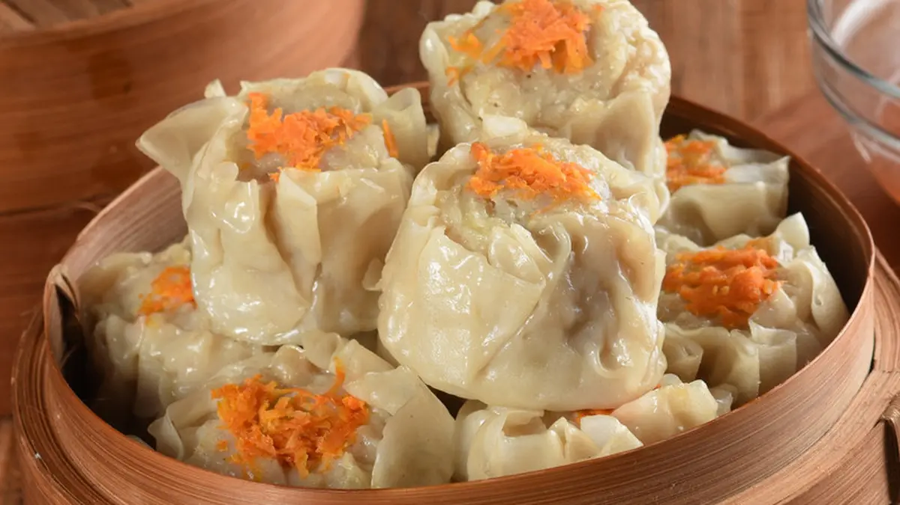

Chicken Siomay

Bahan:
- 40 lembar kulit pangsit, bentuk bulat dengan diameter 7x7 cm
- Saus sambal secukupnya
- Mustrad secukupnya
Bahan isi:
- 200 gram daging ayam, cincang
- 150 gram udang, kupas kulitnya lalu potong bentuk dadu
- 3 sdm waterchesnut atau bengkuang cincang
- 1 sdm daun bawang cincang
- 1 butir telur, kocok
- 2 sdm tepung maizena
- 1 sdm perasan air jahe (dari 2 cm ruas jahe, haluskan lalu beri 2 sdm air dan peras airnya)
- 1/8 sdt merica bubuk
- 1 sdt gula pasir
- 1,5 sdt garam
- 1 sdm kecap asin
- 1 sdt minyak wijen
- 1 sdm air
- 1 sdm minyak goreng
Cara Membuat:
- Isi: Campur ayam dan udang dengan semua bahan isi lainnya, aduk menggunakan tangan dalam gerakan satu arah sampai rata dan lengket. Lakukan sekitar 3-4 menit.
- Ambil selembar kulit pangsit, letakkan dua sendok teh adonan isi di atasnya. Genggam dengan tan, ratakan permukaannya. Lakukan sampai isian habis.
- Masak air pada panci kukus. Setelah mendidih masukkan siomay lalu kukus hingga matang, sekitar 15 menit. Angkat.
- Hidangan dengan saus cocolan.
Back to main page